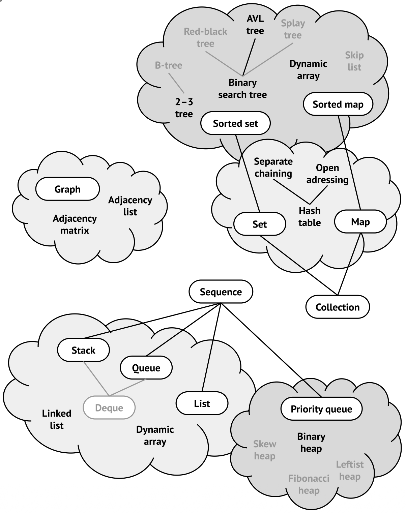

8 Abstract data types
In Chapter 6 we introduced several data structures for handling different kinds of sequences, in particular stacks and queues. Interestingly these sequences can be implemented in different ways: both stacks and queues can implemented using linked lists or dynamic arrays.
If we want to use these data structures in a program, we are usually not interested in exactly how they are implemented, as long as they work as they should. For example, suppose we are making a telephone switchboard system that should be able to handle many calls at the same time. If all agents are busy, then the caller should be put on hold – and probably we want to follow the principle “first-come-first-served”, so we want to use a queue for this. But we are not interested if this queue is implemented using a dynamic array or a linked list, so we want to hide away this implementation-specific information.
Using the concept of abstract data types, ADTs, we can distinguish between the logical behaviour of a data structure and its actual implementation. An ADT describes what operations that can be performed on a data structure, and how these operations should behave. But it does not say anything about how these operations should be implemented. The operations offered by an ADT is often called its application programming interface (API), and is similar to an interface or a protocol in an object-oriented language.
A classic example is the stack ADT, which supports the following operations:
interface Stack of T:
push(stack, x: T) // Pushes x on the top of the stack
pop(stack) -> T // Pops the top element off the stack and returns it
isEmpty(stack) -> Bool // Tells if the stack is empty or notAs discussed in Chapter 6, a stack can be implemented using either a dynamic array or a linked list. Using the terminology from object-oriented programming, dynamic arrays and linked lists are two separate classes that implements the stack interface.
Often we can distinguish between core and auxiliary operations of an ADT. The core operations are the ones that define the “essence” of the data type, while the auxilary operations might simplify some use cases, but are not essential. For the example of stacks, here are some common auxiliary operations:
interface Stack of T:
(...)
size(stack) -> Int // Returns the number of elements on the stack
peek(stack) -> T // Returns the top element, but does not remove itAlthough different implementations of an abstract data type offer the same operations, the choice of data structure can significantly impact the efficiency of those operations. Often, there are trade-offs involved: optimising one operation may come at the cost of another. Furthermore, different applications may prioritise different operations. One program might frequently perform operation A, while another relies more heavily on operation B. In such cases, it is often not possible to implement all operations efficiently, so multiple implementations of the same ADT are needed. Additionally, one data structure may be more efficient for small datasets (thousands of elements), whereas another may scale better for large datasets (millions of elements).
The most suitable data structure depends on the specific use case, and it is important that you can make informed and well-reasoned choices when it comes to selecting what data structure to use.
Example: Databases
A database is a structured collection of data that can be easily accessed, managed, and updated. Efficiently organising, storing, and searching the records in a database is a key challenge in database design.
Two popular implementations for managing large disk-based database applications are hash tables (Chapter 11) and search trees (Chapter 10). Both support efficient insertion and deletion of records, as well as different kinds of queries. However, they differ in the types of queries they handle best. Hash tables are particularly efficient for exact-match queries, where you are looking for a record with a specific key. On the other hand, B-trees are better suited for range queries, where you want to retrieve all records with keys within a certain interval.
There are many different abstract data types, but most of them can be categorised in just a few generic groups. The ones we use in this book were already introduced in Section 1.5, but we repeat them here:
- Sequences
- In a sequence the order between the elements matters. This means that each element has a specific position in the sequence, and operations on the ADT are sensitive to this order. Insertion, removal, and retrieval operations often depend on the position within the sequence. Chapter 6 covered stacks, queues, double-ended queues (deques), and general lists, as well as the two main data structures that implement sequences – dynamic arrays and linked lists.
- Priority queues
- A priority queue is also a kind of sequence, because the order matters. But it is different from other seuences because the order depends on the priority of an element. The core operations are similar to stacks and queues, but priority queues often have different use cases, and they are implemented using completely different data structures. Chapter 9.4 discusses how to implement priority queues using different kinds of heaps.
- Sets
- A set represents an unordered collection of elements. Just like in mathematical sets, an element can only occur once. This means that adding an element sometimes doesn’t change the set at all. There are many different data structures that can be used to implement sets, but they can be divided into two main groups – where search trees are discussed in Chapter 10, and hash tables in Chapter 11.
- Maps
- A map (or dictionary) is similar to a set, but represents a collection of key-value pairs. The main idea is that you can use a map as a very simple database, where you can look up the value for a given key (or change the value, or remove it). This means that maps do not allow duplicate keys, just like sets do not allow duplicate elements. Maps and sets are very similar to each other, and all data structures that can be used to implement sets can also be used to implement maps.
- Graphs
- Graphs are used to model relationships between elements. The elements in a graph are called vertices or nodes, and the relations between vertices are represented by edges. There are many different algorithms on graphs, such as finding the shortest path between two vertices, or minimal set of edges that connect all vertices in a graph. Graphs are introduced, together with some of their core algorithms, in Chapter 12.
The rest of this chapter gives a high-level overview of the ADTs covered throughout the course. Figure 8.1 summarises these ADTs and highlights how they relate to one another. Each ADT will be discussed in more detail later in the book, including their operations and the data structures used to implement them.
